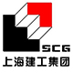

上海建工
上海建工集团（下称：上海建工）是中国建设行业的龙头企业，承担了中国城市现代化建设的重任。
六十年来，上海建工多次刷新中国乃至世界工程建设史上的纪录。在积极参与中国城市化进程中，为各地奉献了众多工程精品，包括超高层建筑、大型桥梁工程、轨道交通工程、宾馆商贸楼宇工程、公共文化体育工程、工业工程、环保工程等。同时，在全球30多个国家和地区，承担了近百项工程，不少成了当地的标志。
上海建工打造完整的产业链，从规划、设计、施工到运行保障维护；从工程建设全过程到高性能商品混凝土和建筑构配件生产供应；从房地产开发到城市基础设施项目的投资、融资、建设、运营。一大批专业技术能力强、经营管理素质高的企业在为社会提供全面服务的同时，塑造了“上海建工”优质品牌的形象。上海建工的“SCG”商标获得国家工商总局认定的“中国驰名商标”称号。
上海建工具有国家有关工程设计、施工和房地产开发等方面的最高等级资质，具备对外承包经营、外派劳务、进出口贸易等资格；集团优势使上海建工具备工程总承包能力、成套施工技术研发和集成能力、工程设计咨询和技术研发和集成能力、工程配套服务集成能力、产业集成能力和社会资源整合能力，形成了强大的综合实力。
上海建工坚持“科技兴企”、“人才强企”的发展战略，依托国家级技术中心、博士后工作站以及多层次的技术研发体系，取得了一批具有行业领先水平的科技成果，其中国家科技进步奖一等奖4项、二等奖7项和二百多项部市级奖项。由一大批专业技术人员、管理人员、技术工人组成的人才高地，包括中国工程院院士、国家级中青年专家、享受国务院特殊津贴专家、勘察设计大师以及一批学科带头人和专业领军人才。
上海建工遵循“和谐为本、追求卓越”的核心理念，发扬“科学、合作、进取”的企业精神，竭诚为社会各界提供全过程、高品位的服务，奉献更多的传世佳作。